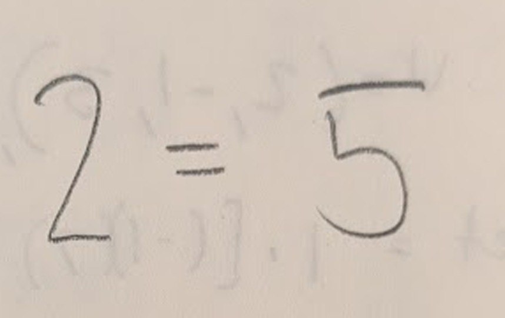
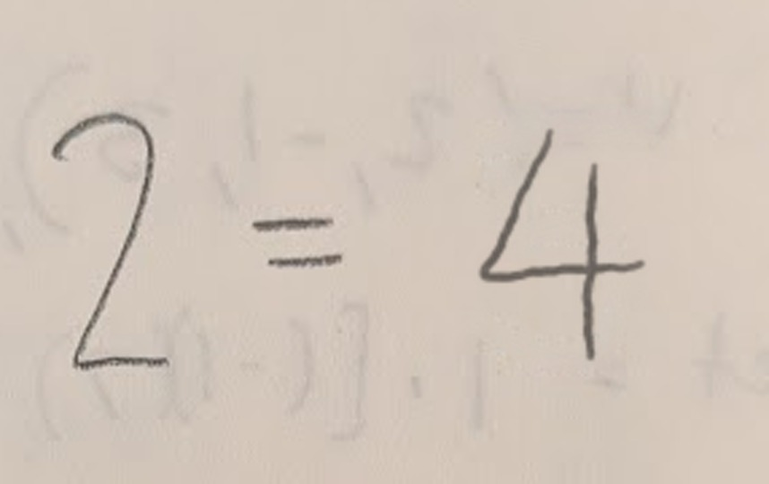
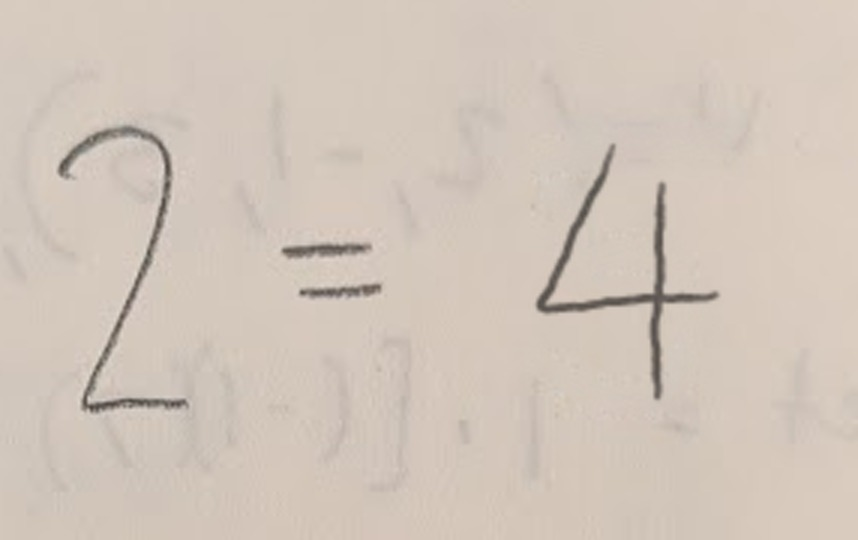
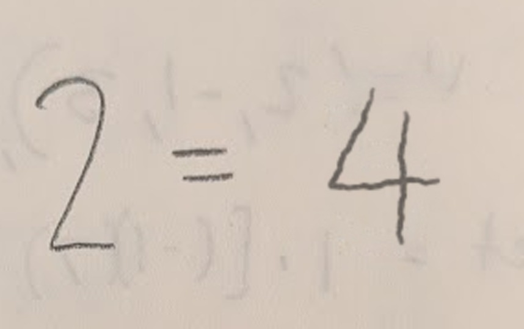
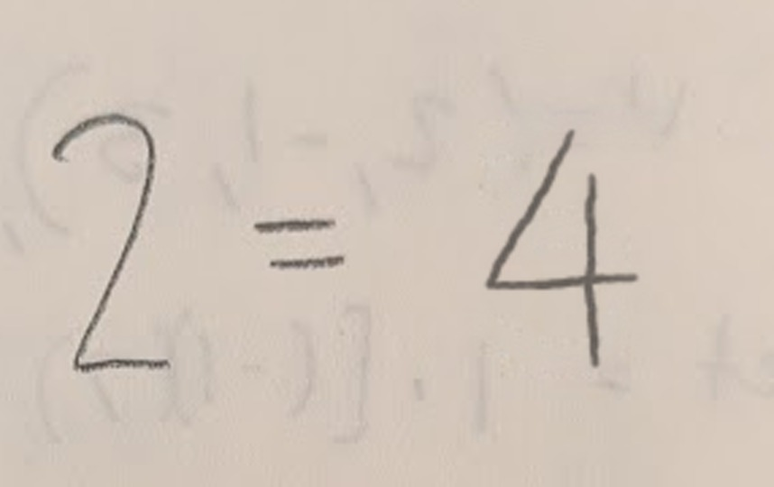
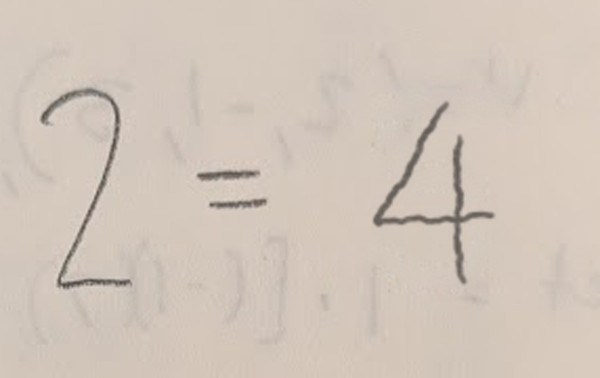
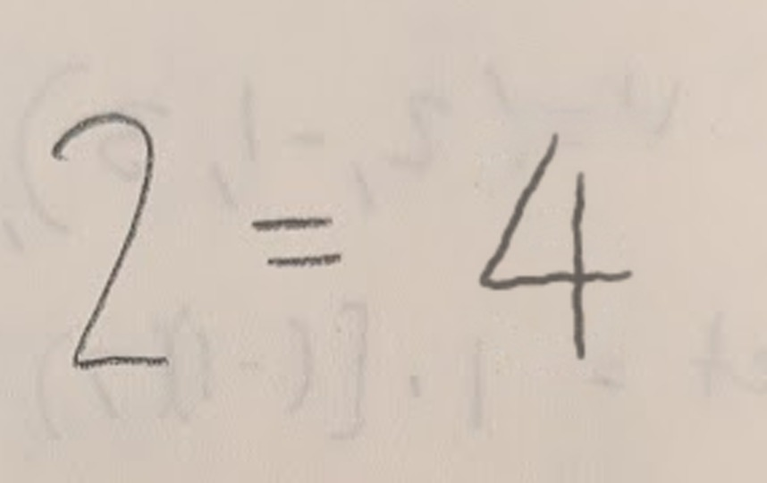
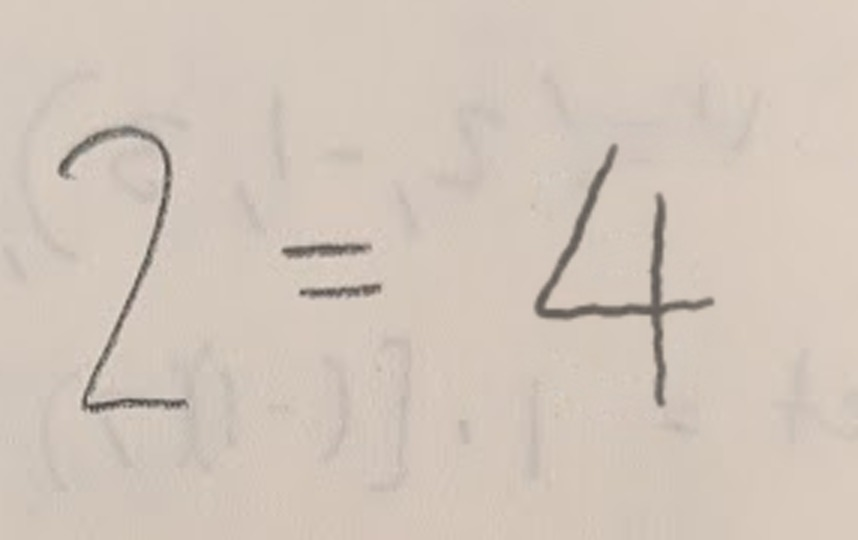
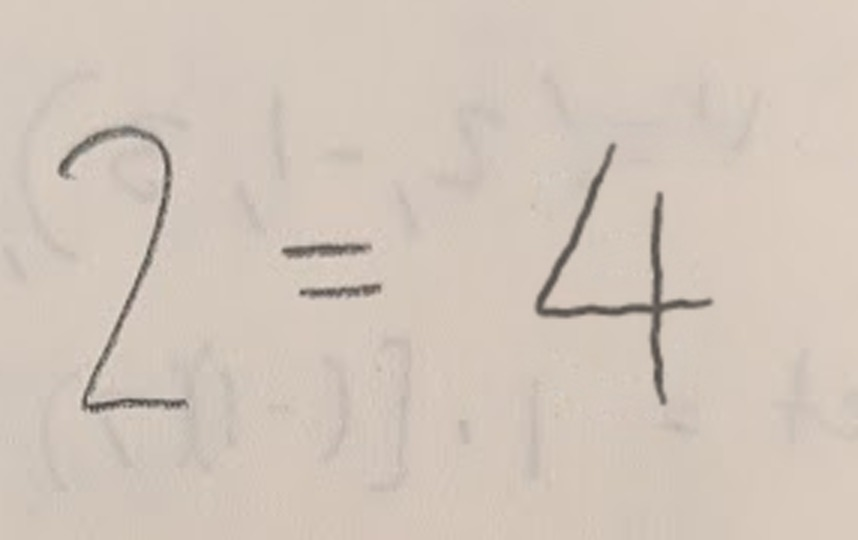

Each card is a close-up of one version of the corrected answer. The orange card is the real, untouched photo for comparison. Click any card for the full page. Tell Claude the number of your favourite.








